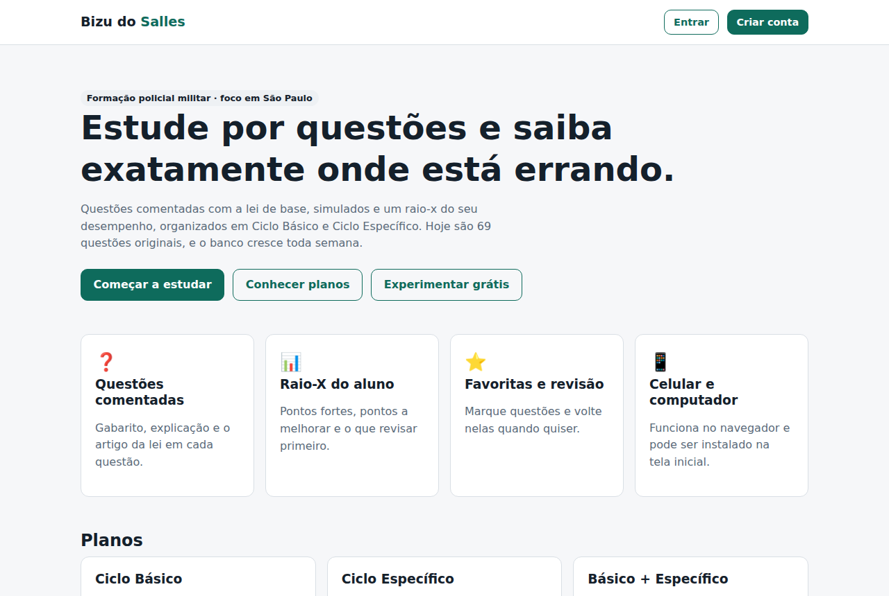
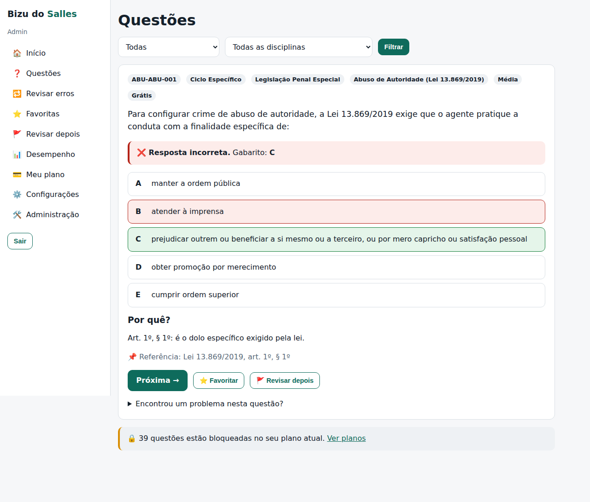
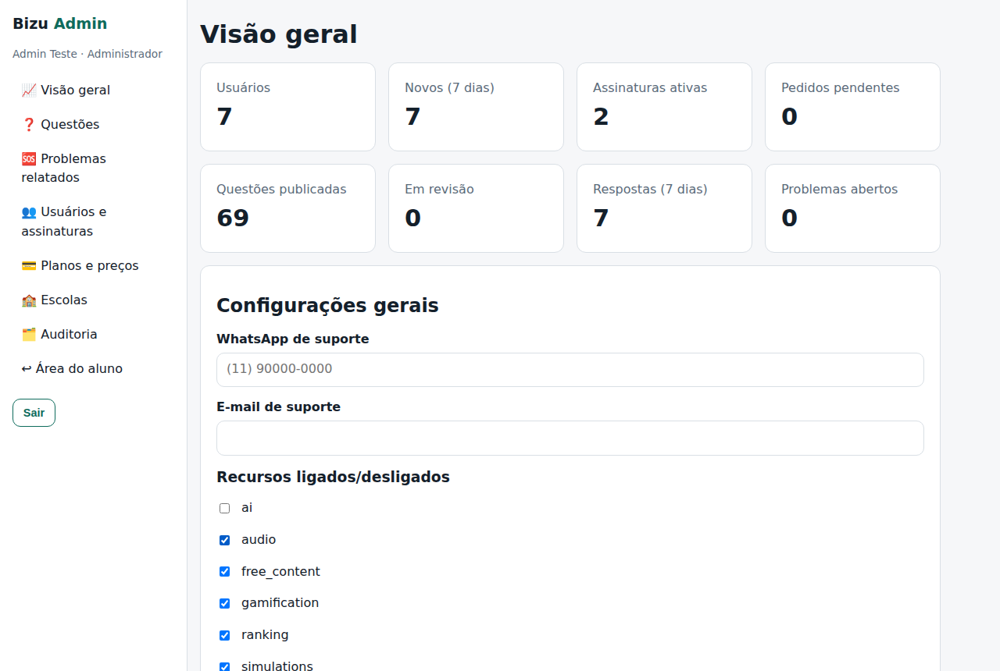
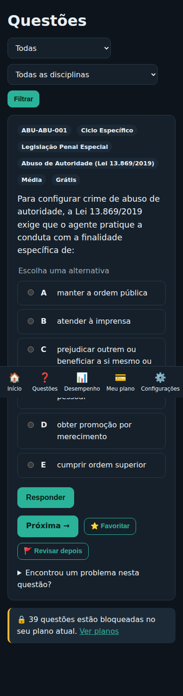

Relatório do projeto
Bizu do Salles
Plataforma de estudos por questões para a formação da Polícia Militar
Ciclo Básico + Ciclo Específico · foco em São Paulo
Versão 0.2.2 · 29 de setembro de 2026
Escrito para quem está começando: cada termo técnico é explicado.
Sumário
- Resumo em 1 minuto
- O que é o Bizu do Salles
- O que já está pronto
- Como o sistema funciona por dentro
- Glossário — as palavras técnicas explicadas
- Segurança — o que protege você e seus alunos
- Conteúdo, questões e direitos autorais
- Como usar o painel do administrador
- Onde fica cada coisa (mapa do projeto)
- Guia de edição — o que mudar e onde
- Como colocar na internet e quanto custa
- O que falta fazer (roteiro)
- Cuidados importantes e checklist
1. Resumo em 1 minuto
178questões originais comentadas
109do RDPM de São Paulo
18testes automáticos passando
Em uma frase
O Bizu do Salles já é um site funcionando: o aluno cria conta, estuda por questões com explicação e vê o próprio desempenho; você, como administrador, cadastra questões, muda preços e libera o acesso de quem pagou — tudo por telas, sem mexer em código.
- Pronto: site, cadastro, login seguro (um aparelho por vez), questões, desempenho, planos, painel do administrador, testes, backups, documentação.
- Ainda falta: publicar na internet, pagamento automático (Mercado Pago), simulados, recuperação de senha por e-mail, aplicativo de celular nas lojas.
- Onde está tudo: no seu GitHub, repositório
WillCoder01, pasta PROJETOS/bizu-do-salles.
2. O que é o Bizu do Salles
É uma plataforma de estudos por questões para alunos dos cursos de formação da Polícia Militar. A ideia é simples: o aluno responde questões, vê na hora se acertou, lê a explicação com o artigo da lei, e o sistema mostra em que matérias ele está forte ou fraco.
Para quem
Alunos do Ciclo Básico e do Ciclo Específico. O sistema atende todos os estados, mas o conteúdo estadual começou por São Paulo.
Como o aluno paga
| Plano | O que libera | Preço inicial* | Duração* |
|---|
| Ciclo Básico | Questões do Ciclo Básico | R$ 35,00 | 90 dias |
| Ciclo Específico | Questões do Ciclo Específico | R$ 35,00 | 90 dias |
| Básico + Específico | Tudo | R$ 60,00 | 90 dias (trimestral) |
* Valores de exemplo. Você muda no painel, em Planos e preços, sem programar.
Amostra grátisQuem cria conta sem pagar já pode responder as 3 primeiras questões de cada assunto. Serve para o aluno experimentar antes de comprar.
O que nos diferencia
- Foco: conteúdo dirigido à formação policial, não a "qualquer concurso".
- Lei na mão: toda questão diz o artigo exato em que se baseia.
- Raio-X: o aluno sabe onde está errando ("você está com 54% em RDPM, revise antes de avançar").
- Simples e barato: telas limpas, funciona bem no celular.
3. O que já está pronto
| Parte | O que faz | Status |
|---|
| Página inicial | Apresenta a plataforma e mostra os planos (com os preços do banco de dados). | Pronto |
| Cadastro e login | Criar conta escolhendo o estado; entrar; sair. Senha guardada de forma segura. | Pronto |
| Um aparelho por vez | Se o aluno entrar em outro aparelho, o anterior é desconectado com o aviso "Sua conta foi conectada em outro dispositivo". Evita compartilhar conta. | Pronto |
| Questões | Filtros (não respondidas, que errei, favoritas, revisar depois, por disciplina). Alternativas embaralhadas por aluno. Gabarito só depois de responder. | Pronto |
| Desempenho e Raio-X | Acertos, erros, aproveitamento por disciplina e assunto, tempo médio, recomendações. | Pronto |
| Painel do aluno | Plano, validade, dias restantes, sequência de dias estudando. | Pronto |
| Acessibilidade | Tema claro/escuro/automático e tamanho da letra. | Pronto |
| Relatar problema | Botão "Encontrou um problema?" em cada questão; vai para o painel. | Pronto |
| Painel do administrador | Questões, planos e preços, usuários, liberar pagamento, escolas, problemas relatados, configurações, auditoria. | Pronto |
| Backups | Comandos para copiar e restaurar o banco de dados. | Pronto |
| Testes automáticos | 12 testes das regras + 6 testes num navegador de verdade. Rodam sozinhos no GitHub. | Pronto |
| Simulados | Provas com cronômetro e resultado. | Em andamento |
| Pagamento automático | Mercado Pago (Pix/cartão) liberando sozinho. | A fazer |
| Publicação na internet | Deixar o site acessível a todos com endereço próprio. | A fazer |

Página inicial (computador)

Questão respondida, com gabarito e explicação
4. Como o sistema funciona por dentro
Pense no sistema como uma loja:
Vitrine
O navegador do aluno (celular ou computador) mostra as telas.
→
Balcão
O servidor (Next.js) confere quem é o aluno, o plano, e corrige a resposta.
→
Estoque
O banco de dados (PostgreSQL) guarda alunos, questões e respostas.
A regra de ouroA vitrine só mostra. Quem decide se o aluno pode ver a questão, se o plano está válido e se a resposta está certa é sempre o balcão (servidor). Por isso ninguém consegue "liberar" conteúdo pago mexendo no navegador.
O caminho de uma resposta
- O aluno escolhe a alternativa e clica em Responder.
- O servidor confere: o aluno está logado? A sessão é a do aparelho atual? O plano dele libera essa questão?
- O servidor "desembaralha" a alternativa (cada aluno vê as letras numa ordem diferente) e compara com o gabarito.
- Grava a tentativa no banco (acertou/errou, tempo).
- Só então devolve a tela com o gabarito, a explicação e o artigo da lei.
O caminho de um pagamento (hoje)
- O aluno escolhe um plano → vira um pedido pendente.
- O aluno paga (ex.: Pix) e manda o comprovante no WhatsApp de suporte.
- Você confere no extrato do banco e clica em Confirmar pagamento e liberar no painel.
- O plano fica ativo por 90 dias; o sistema registra que foi você quem liberou.
AtençãoNunca libere pelo "print" do comprovante sem ver no extrato — prints são fáceis de falsificar. Quando o Mercado Pago for ligado, isso passa a ser automático.
5. Glossário — as palavras técnicas explicadas
| Termo | O que significa (com exemplo) |
|---|
| GitHub / Repositório | A "pasta na nuvem" onde fica todo o código, com histórico de cada mudança. O seu é WillianCoder/WillCoder01. |
| Commit | Uma "foto" das mudanças, com descrição. Dá para voltar a qualquer foto antiga — é o seu "desfazer" de segurança. |
| Branch | Uma cópia paralela para trabalhar sem mexer na versão principal (main). Eu trabalho na branch claude/…. |
| Pull Request (PR) | O pedido para juntar a branch na versão principal. É onde você revisa e clica em Merge. |
| Merge | Juntar as mudanças aprovadas na versão principal. |
| CI (verificação automática) | O GitHub roda todos os testes sozinho a cada mudança. Verde = tudo certo; vermelho = algo quebrou. |
| Front-end / Back-end | Front-end é a vitrine (telas). Back-end é o balcão (regras, segurança, banco). |
| Next.js | A ferramenta usada para construir o site (vitrine + balcão no mesmo projeto). |
| Banco de dados (PostgreSQL) | O "estoque": onde ficam guardados alunos, questões, respostas e planos. |
| Prisma | O "tradutor" entre o código e o banco de dados. |
| Migração | Uma mudança na estrutura do banco (ex.: criar uma coluna nova), feita de forma registrada e segura. |
| Seed | A "carga inicial": coloca no banco os planos, estados e questões dos arquivos. |
| .env | Arquivo secreto com senhas e chaves (banco, pagamento). Nunca vai para o GitHub. |
| Sessão / Cookie | O "crachá" que o site dá após o login. Só vale um por conta ao mesmo tempo. |
| Hash de senha (Argon2id) | A senha é embaralhada de forma irreversível. Nem você consegue ver a senha do aluno — só conferir se está certa. |
| Deploy | Publicar o site na internet. |
| Webhook | Aviso automático que o Mercado Pago manda ao nosso sistema dizendo "o pagamento X foi aprovado". |
| Backup | Cópia de segurança do banco para recuperar em caso de problema. |
| Auditoria | Registro de tudo que a equipe fez no painel: quem, quando e o quê. |
| PWA | Site que pode ser "instalado" na tela inicial do celular, parecendo um aplicativo. |
| LGPD | Lei Geral de Proteção de Dados: regras para tratar dados pessoais dos alunos. |
6. Segurança — o que protege você e seus alunos
| Proteção | O que evita |
|---|
| Decisões só no servidor | Aluno "esperto" liberando conteúdo pago pelo navegador. |
| Senha com Argon2id | Vazamento de senhas legíveis, mesmo se alguém copiar o banco. |
| Um aparelho por vez | Compartilhamento de conta (um paga, cinco usam). |
| Limite de tentativas | Robôs tentando adivinhar senhas (bloqueia após várias tentativas em 15 min). |
| Mensagem genérica no login | Descobrir quais e-mails têm conta ("e-mail ou senha incorretos"). |
| Gabarito só depois de responder | Ver a resposta no código da página. |
| Alternativas embaralhadas por aluno | "Cola" do tipo "a da questão 12 é a letra C". |
| Cabeçalhos de segurança | Ataques comuns de sites (páginas falsas embutindo o seu site, scripts maliciosos). |
| Auditoria | Mudanças sem responsável; toda ação no painel fica registrada. |
| Segredos fora do código | Senhas e chaves vazando pelo GitHub. |
| Backups com conferência | Perder dados; cada cópia tem uma "impressão digital" (SHA-256) conferida na restauração. |
Privacidade (LGPD)
- Coletamos só o necessário: nome, e-mail, senha (embaralhada), estado e escola opcional. Não pedimos CPF.
- No ranking futuro aparece só o apelido que o aluno escolher.
- Os textos de Termos de uso e Privacidade já existem como modelo — revise com um advogado antes de vender.
7. Conteúdo, questões e direitos autorais
109RDPM — SP
35Constituição Federal
34Leis penais, DUDH, Português, Matemática
Como uma questão é feita
- Parte do texto oficial da lei (ex.: o PDF da Alesp que você enviou).
- É escrita do zero, com 5 alternativas (A a E), uma só correta.
- Tem explicação, "por que as outras estão erradas" (quando útil) e a referência exata (ex.: LC 893/2001, art. 13, item 85).
- Passa pelos controles automáticos: formato, código único, alternativas sem repetição, fonte informada, explicação mínima, gabaritos bem distribuídos entre as letras.
Conferência do RDPMAs 26 questões de classificação (grave, média ou leve) foram comparadas automaticamente com os 132 itens do art. 13 da lei oficial: nenhuma divergência.
Regra de direitos autorais — muito importante
Leis, decretos e textos oficiais podem ser usados (a Lei 9.610/98, art. 8º, IV, diz que não têm direito autoral). Apostilas, questões, PDFs e áudios de outros cursos — mesmo gratuitos na internet — não podem ser copiados, reescritos ou ter a marca d'água trocada. Isso pode gerar processo e derrubar o site. Use o material dos outros só para saber quais assuntos caem.
Como você adiciona conteúdo
- Pelo painel (mais fácil): Admin → Questões → + Nova questão. Preencha o formulário e salve.
- Enviando PDFs para mim: mande o texto oficial (ex.: Constituição de SP, normas da escola) e eu escrevo as questões.
8. Como usar o painel do administrador
Entre no site com sua conta de administrador e acesse /admin.
| Tela | Para que serve |
|---|
| Visão geral | Números do negócio (usuários, assinaturas, questões, problemas). Configura WhatsApp/e-mail de suporte e liga/desliga recursos. |
| Questões | Buscar, criar e editar. A questão só aparece para os alunos com status Publicada. Marque Grátis para usá-la como amostra. |
| Problemas relatados | O que os alunos apontaram. Corrija a questão e marque como resolvido. |
| Usuários e assinaturas | Liberar quem pagou, cancelar plano, desconectar aparelho, bloquear conta. |
| Planos e preços | Mudar nome, preço, duração e se o plano está à venda. |
| Escolas | Lista de escolas que o aluno escolhe no cadastro. |
| Auditoria | Histórico de tudo que a equipe fez. |

Painel do administrador

Questão no celular (tema escuro)
Papéis da equipe
- Administrador: pode tudo.
- Editor: cria e revisa questões, mas não publica nem vê pagamentos. Bom para um professor ajudante.
9. Onde fica cada coisa (mapa do projeto)
PROJETOS/bizu-do-salles/
├─ src/app/ ← TELAS do site (cada pasta = um endereço)
│ ├─ page.tsx → página inicial
│ ├─ app/ → área do aluno
│ ├─ admin/ → painel do administrador
│ ├─ termos/ privacidade/ ajuda/ → textos (edite à vontade)
│ └─ globals.css → CORES do site
├─ src/config/ ← ✏️ TEXTOS (site.ts) e NÚMEROS (regras.ts) para editar
├─ src/core/ ← REGRAS (acesso, sessão, desempenho) — testadas
├─ src/lib/ ← login, banco, auditoria, limites
├─ content/questoes/ ← QUESTÕES em arquivos (uma pasta por assunto)
├─ prisma/ ← estrutura do banco de dados
├─ scripts/ ← criar admin, backup, restaurar, relatórios
├─ tests/ e2e/ ← testes automáticos
└─ docs/ ← toda a documentação (inclui este relatório)
"Quero mudar…" — onde mexer
| Quero mudar… | Onde |
|---|
| Preço ou duração de plano | Painel → Planos e preços |
| Uma questão | Painel → Questões |
| WhatsApp de suporte | Painel → Visão geral |
| Cores do site | src/app/globals.css (topo do arquivo) |
| Textos da página inicial e perguntas frequentes | src/config/site.ts |
| Prazos, limites e critérios do Raio-X | src/config/regras.ts |
| Termos / privacidade | src/app/termos, src/app/privacidade |
Documentos de apoio (na pasta docs)
GUIA_INICIANTE (comece por aqui) · ADMIN_GUIDE · CONTENT_GUIDE · SECURITY · BACKUP · DEPLOY · PAYMENTS · PRODUCT_ROADMAP
10. Guia de edição — o que mudar e onde
Este capítulo é o seu "manual de manutenção". Para cada coisa que você pode querer mudar, ele diz onde, como e o nível de cuidado.
🟢 Sem código (painel)Tudo que dá para mudar clicando em /admin. Seguro e registrado na auditoria.
🟡 Arquivo de configuraçãoUm arquivo feito para você editar, com instruções dentro. Troque só o texto entre aspas ou os números.
🔍 Como achar os pontos editáveis no código: todo arquivo importante começa com um cabeçalho padrão:
📄 O QUE É: para que serve o arquivo
✏️ EDITÁVEL: o que você pode mudar nele
⚠️ CUIDADO: o que não deve mexer
📘 Guia completo: docs/RELATORIO.pdf
No GitHub ou no editor (VS Code), pesquise por
✏️ EDITÁVEL para ver
todos os pontos editáveis de uma vez (são 41 marcações).
A. Negócio e vendas
| Quero mudar… | Onde | Nível |
|---|
| Preço, nome, duração de um plano | Painel → Planos e preços | 🟢 |
| Tirar um plano de venda | Painel → Planos → desmarcar "Plano à venda" | 🟢 |
| Liberar quem pagou | Painel → Usuários e assinaturas → Confirmar pagamento | 🟢 |
| Cancelar o plano de alguém | Painel → Usuários → Cancelar | 🟢 |
| WhatsApp e e-mail de suporte | Painel → Visão geral → Configurações gerais | 🟢 |
| Ligar/desligar recursos (ranking, IA, áudio…) | Painel → Visão geral → Recursos ligados/desligados | 🟢 |
B. Conteúdo
| Quero mudar… | Onde | Nível |
|---|
| Criar ou corrigir uma questão | Painel → Questões → Nova questão / clicar no código | 🟢 |
| Esconder uma questão dos alunos | Painel → Questões → status Arquivada | 🟢 |
| Deixar uma questão grátis (amostra) | Painel → Questões → marcar Grátis | 🟢 |
| Resolver erro apontado por aluno | Painel → Problemas relatados | 🟢 |
| Adicionar escolas da lista do cadastro | Painel → Escolas | 🟢 |
| Adicionar muitas questões de uma vez | content/questoes/ (instruções no arquivo LEIA-ME.md da pasta) | 🟡 |
| Quantas questões de cada arquivo ficam grátis | src/config/regras.ts → gratisPorArquivo | 🟡 |
C. Textos e aparência do site
| Quero mudar… | Onde | Nível |
|---|
| Título, subtítulo e botões da página inicial | src/config/site.ts → titulo, subtitulo, botoes | 🟡 |
| Os 4 cartões de recursos da página inicial | src/config/site.ts → recursos | 🟡 |
| Perguntas frequentes (Ajuda) | src/config/site.ts → faq | 🟡 |
| Nome do site na aba do navegador | src/config/site.ts → nome, descricao | 🟡 |
| Cores (claro e escuro) | src/app/globals.css → variáveis do topo (--brand, --accent…) | 🟡 |
| Termos de uso / Privacidade | src/app/termos/page.tsx, src/app/privacidade/page.tsx | 🟡 |
| Itens do menu do aluno | src/app/app/layout.tsx → NAV e MOBILE | 🟡 |
| Nomes dos filtros de questões | src/lib/questions.ts → FILTERS | 🟡 |
| Nomes "Ciclo Básico", "Fácil/Média/Difícil" | src/lib/format.ts → CYCLE_NAME, LEVEL_NAME | 🟡 |
| Ícone do site / do app no celular | public/icon.svg e src/app/icon.svg | 🟡 |
D. Regras do sistema (números)
| Quero mudar… | Onde (src/config/regras.ts) | Padrão |
|---|
| Quantos dias o login dura | sessao.diasValidade | 30 dias |
| Tentativas de login antes de bloquear | limites.loginPorConta | 8 em 15 min |
| Cadastros por internet (IP) | limites.cadastroPorIP | 5 por hora |
| Mínimo de respostas para o Raio-X | raioX.minimoRespostas | 5 |
| O que é "ponto fraco" / "ponto forte" | raioX.fracoAbaixoDe / forteAPartirDe | 60% / 80% |
E. Não mexa sem ajuda 🔴
| Arquivo | Por quê |
|---|
src/lib/auth.ts | Login, senhas e "um aparelho por vez". |
src/app/app/actions.ts, src/app/admin/actions.ts | Verificações de segurança e auditoria. |
src/core/ | Regras de acesso e cálculos, protegidos por testes. |
prisma/schema.prisma | Estrutura do banco: mudança exige migração e backup. |
next.config.ts | Cabeçalhos de segurança do servidor. |
.env | Senhas e chaves. Nunca envie para o GitHub. |
Passo a passo seguro para editar um arquivo 🟡
- No GitHub, abra o arquivo e clique no lápis (Edit), ou abra no VS Code.
- Leia o cabeçalho
📄 / ✏️ / ⚠️ no topo.
- Mude só o texto entre aspas ou o número. Mantenha aspas, vírgulas e colchetes.
- Salve com uma descrição clara (ex.: "muda título da página inicial").
- Espere o CI ficar verde ✅. Se ficar vermelho ❌, algo quebrou: desfaça ou me chame.
DicaNa dúvida, me mande: "quero mudar tal coisa". Eu faço a mudança, testo e te mostro.
11. Como colocar na internet e quanto custa
Recomendação para começar gastando pouco:
| Serviço | Para quê | Custo inicial |
|---|
| Vercel | Hospedar o site | Grátis → ~US$ 20/mês quando crescer |
| Neon | Banco de dados na nuvem, com backup | Grátis → ~US$ 19/mês |
| Registro.br | Endereço próprio (ex.: bizudosalles.com.br) | ~R$ 40/ano |
| Mercado Pago | Receber Pix e cartão | Taxa por venda (Pix ~1%; cartão ~4–5%) |
| Apple / Google (futuro) | Aplicativo nas lojas | US$ 99/ano / US$ 25 uma vez |
Passos (resumo — detalhes no DEPLOY)
- Criar conta no Neon e copiar o endereço do banco.
- Criar conta na Vercel com o GitHub e importar o repositório (pasta
PROJETOS/bizu-do-salles).
- Colar o endereço do banco nas variáveis de ambiente da Vercel.
- Publicar. Depois, criar seu usuário administrador.
- Comprar o domínio e ligar na Vercel.
Posso fazer isso com vocêQuando quiser publicar, me avise: te guio clique a clique.
12. O que falta fazer (roteiro)
| Versão | Entrega | Status |
|---|
| v0.1–0.2 | Banco, regras, site, área do aluno, painel admin, testes | Feito |
| v0.2.1 | 109 questões do RDPM de SP | Feito |
| v0.3 | Simulados (rápido, por disciplina, personalizado, com cronômetro) e resultado | Em andamento |
| v0.4 | Recuperação de senha por e-mail; meta diária | A fazer |
| v0.5 | Cadernos, ranking por apelido, conquistas | A fazer |
| v0.6 | Mais conteúdo de SP (Constituição Estadual, normas da escola) | Depende de PDFs |
| v0.8 | Mercado Pago automático + cupons | A fazer |
| v1.0 | Lançamento: internet, domínio, revisão jurídica, LGPD completa | A fazer |
| v2.0 | Aplicativo Android/iOS | A fazer |
O que eu preciso de você
- PDFs oficiais das outras normas cobradas no curso (Constituição de SP, regulamentos da escola, instruções da PMESP).
- Se possível, a ementa (lista de matérias) do seu curso.
- Decidir o preço final do plano combinado (hoje: R$ 60 como exemplo).
- Um CNPJ/MEI para receber pagamentos quando for vender.
13. Cuidados importantes e checklist
Nunca
- Envie o arquivo
.env ou senhas para o GitHub ou para outras pessoas.
- Libere plano sem ver o dinheiro no extrato.
- Publique questão copiada de outro curso ou apostila.
- Apague dados do banco para "resolver" um problema — peça ajuda antes.
Sempre
- Revise o Pull Request antes de clicar em Merge (o CI precisa estar verde).
- Faça backup antes de mudanças grandes.
- Confira o artigo da lei antes de publicar uma questão nova.
- Use senha forte (12+ caracteres) na conta de administrador.
Checklist antes de vender
| Item |
|---|
| ☐ | Site publicado com domínio próprio (HTTPS automático) |
| ☐ | Termos e privacidade revisados por advogado |
| ☐ | Backup diário ligado e um teste de restauração feito |
| ☐ | Pagamento automático (Mercado Pago) testado |
| ☐ | Pelo menos 300 questões publicadas e revisadas |
| ☐ | WhatsApp e e-mail de suporte configurados no painel |
| ☐ | CNPJ/MEI para emitir recibos |
Relatório gerado automaticamente a partir de docs/relatorio/relatorio.html (comando npm run relatorio).